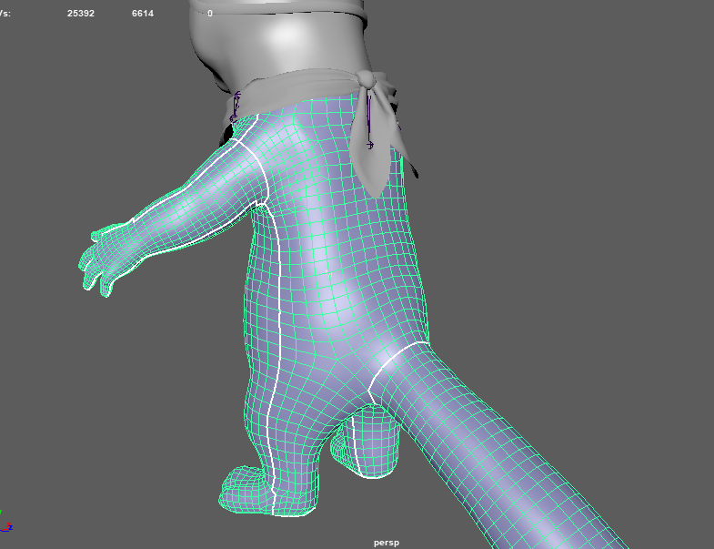

Retopology
When you finish the sculpting stage, you can start building the topology. Retopology is the process of rebuilding your model for use in a game or animation environment. The idea is to create another mesh that simplifies the original HD asset, at a smaller file size that’s easier to use in animations and to be rendered.
Depending on the use-case you envision for your avatar (mainly used in a face-cam scenario, used mostly on mobiles or on desktops) it can have varying degrees of complexity. To make things easier, we are defining for you several complexity tiers for 3D avatars in the Technical Documentation, where you can find complexity by features (animation types, shading, textures), by performance (animations type, number of active vertices, number of textures and their sizes depending on the types of devices like mobile, laptop, pc).
In our example below, the shark avatar is full body and should have a maximum of 5000 active vertices. It has different areas of polygons density because the area of interest is its face, where most of the animations happen, therefore it needs more details.
We use the quad draw tool in Maya for this step of the process, where you can quickly move around the object and build a new model following the surface of the reference, but you can work in a software of your preference as long as you can do the topology in it (BLENDER, TOPOGUN, etc).
There are Rules that you need to follow when building a 3D object:
-
Use the Z-axis as the forward axis of the 3D model, it helps a lot with computations done by procedural animation systems in Animaze.
-
The polygonal surfaces must have the transformation reset to identity. That means their axis should be aligned to the world axis, the position should be 0,0,0 and the scale should be neutral (1,1,1 or 100,100,100 - depending on the software defaults).
-
The scene must be expressed in the metric system
-
Normal maps must not be flipped (in the Autodesk tangent space, or similar)
-
The polygons must not overlap each other.
-
Must avoid 5 sided polygons (n-gons)
You should also consider the following:
-
The topology should be created using polygons as large as possible in the beginning, focusing on obtaining the topology loops.
-
For the wrists and face, try to create more loops, so that the topology will deform correctly when creating animations (pic 1 above).
-
Having separate geometries for body and head is more efficient to work with, but it really depends on the type of model and the purpose of its design.
-
Working with the mirror option activated from the beginning helps a lot - but note that if you make one side only and then mirror it, you’ll have to check and repair the geometry because flaws usually appear in this stage (but check the UV maps). Also, extra vertices resulting from the mesh mirror procedure must be merged in the middle, to avoid geometry flaws.
-
After you finish the polygonal surfaces, do not forget to reset the transformation to identity.
-
The seams shouldn’t be visible on an avatar, so it’s best to have them on parts of the model where they cannot be easily seen. The effect is more visible on shaders with subsurface scattering, fur and translucency or SkindotMap components.

Once the topology is done, you can optimize the model (reducing the number of polygons). Eg: in the area of the fins, it’s back and in less visible areas that do not impact the visual quality.